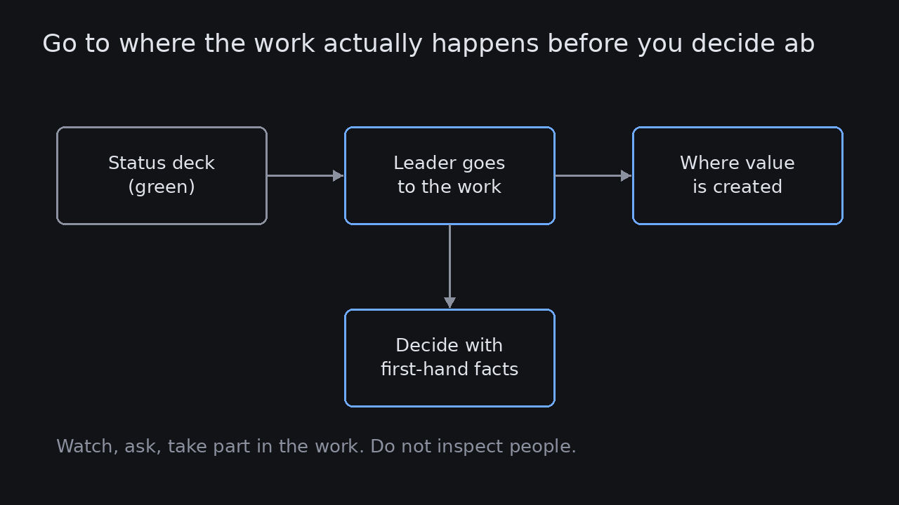

Go to where the work actually happens before you decide about it
Source: Jason Lopas (@JLopas)
original post
What it claims
Jason Lopas points to the Toyota Production System idea of the gemba walk. "Gemba" roughly means "the actual place where value is created". Executives should go to where the real work is happening and take part in it, because that is what lets them make good decisions about that work later. The alternative is deciding from an ivory tower without knowing what is actually going on, which he says happens in many organizations.
Why it matters for a PO
A PO or product leader who learns about the product only through dashboards, status decks and Jira will decide about work they have never seen. Value is created in the team's code reviews, in support queues and in customers' hands. Spending time there, watching and taking part rather than inspecting, shows you which constraints and workarounds are real. It also earns credibility when you later ask the team to change how they work.
3 takeaways
- Reports are second-hand. Before an important decision about how work is done, go and see the work itself.
- Take part, don't audit. The point is to understand the constraints, not to catch people out.
- Go to more than one gemba: the team's workflow, support or ops, and the customer's real environment.
Practice this week
This week, spend one hour at a gemba you don't usually visit: pair on a deploy, sit in on support tickets, or watch a customer use the product live. Write down one thing that surprised you and one decision you would now make differently. Share the decision with the team, not the surprise about any individual.